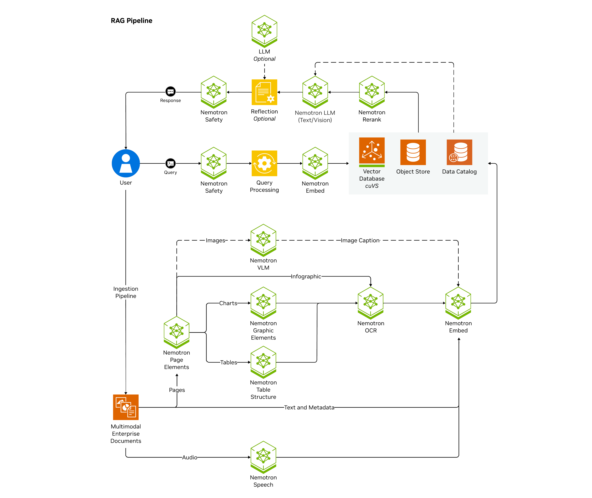
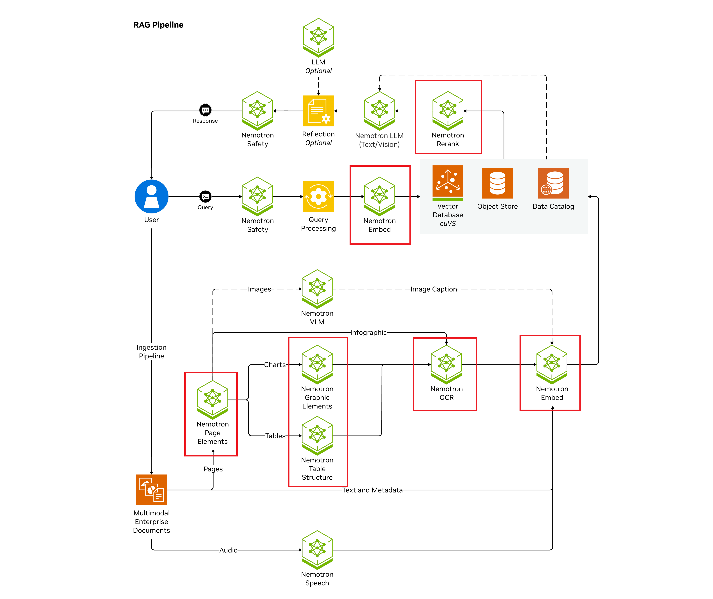
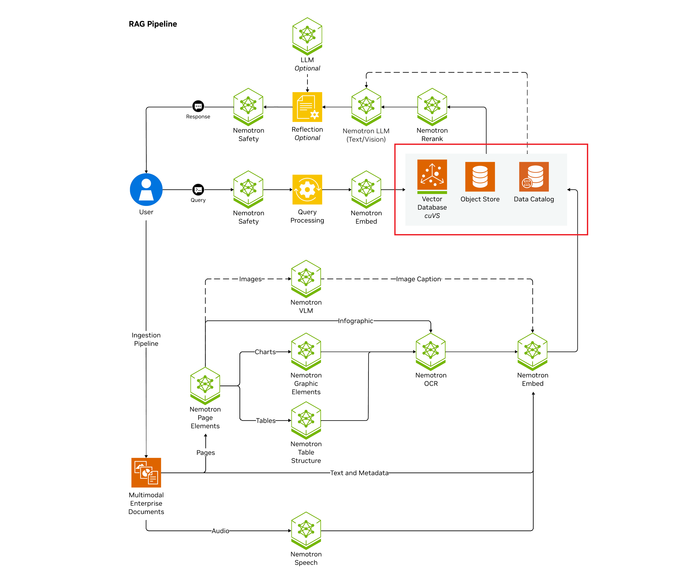
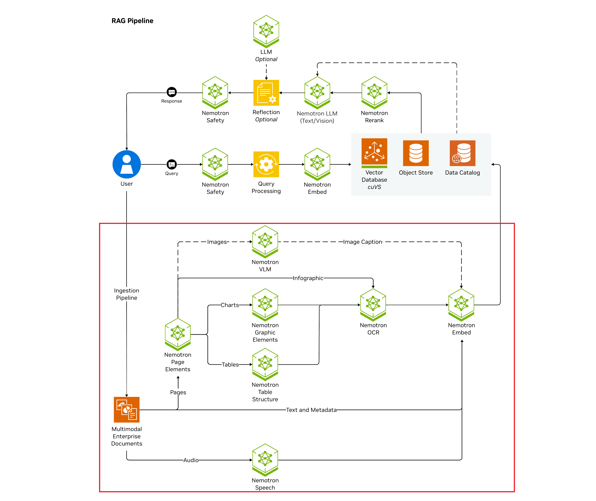
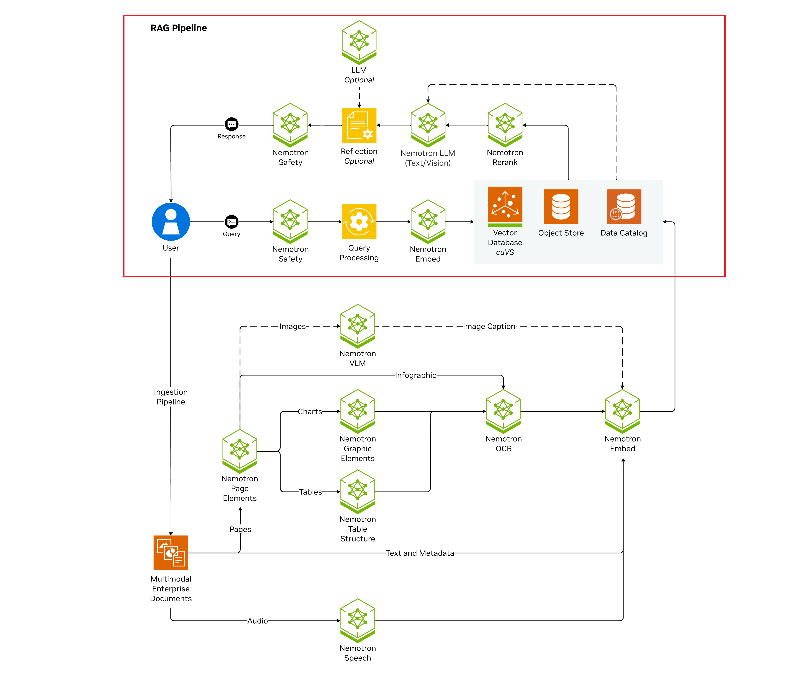
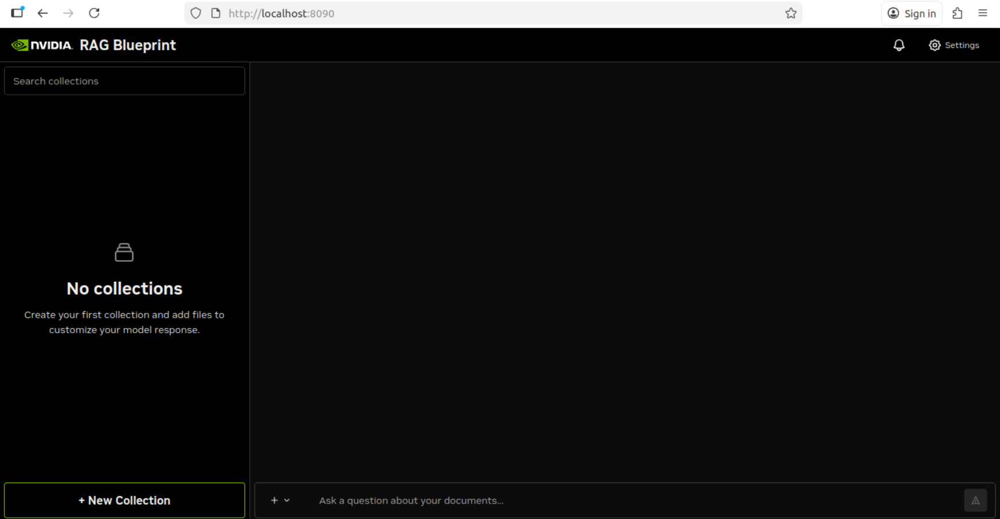
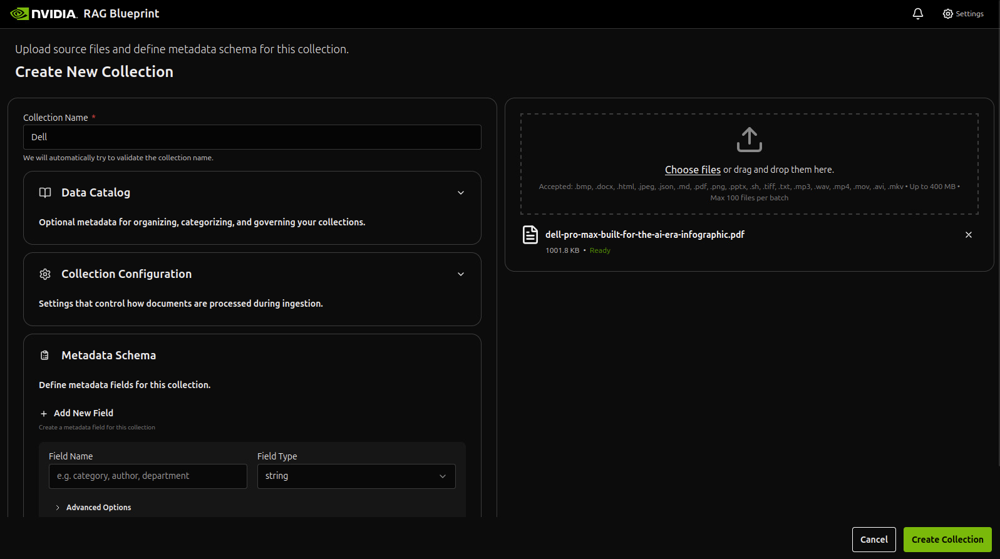
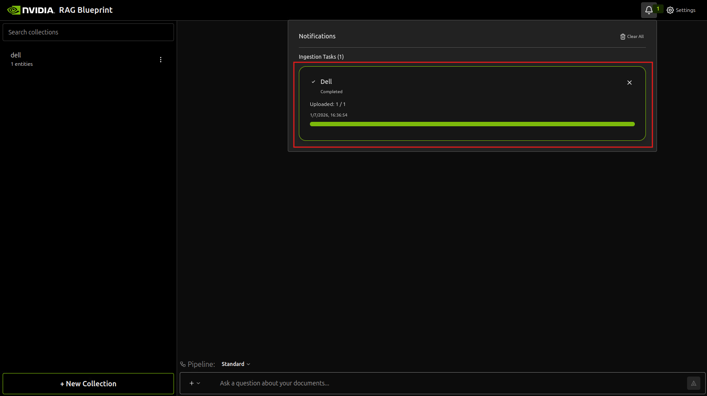
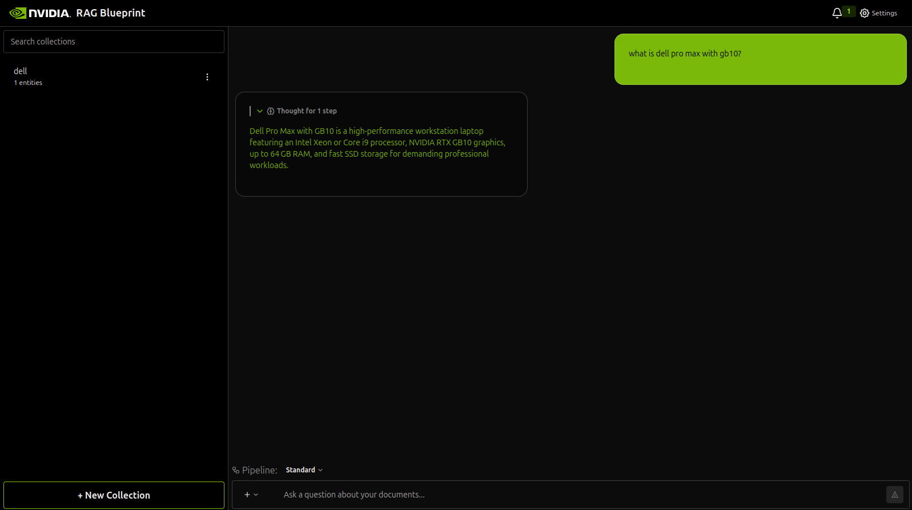
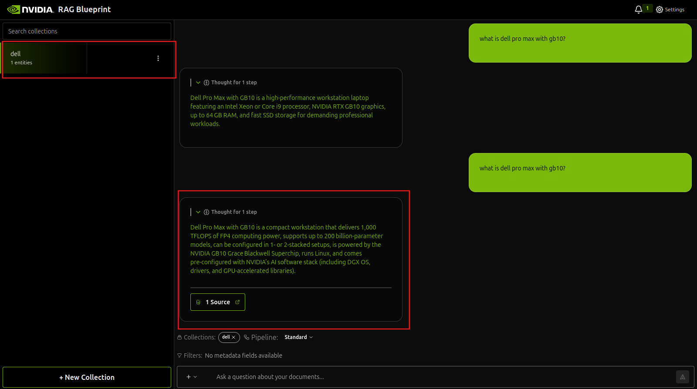

In this walkthrough you deploy the NVIDIA RAG Blueprint with Docker Compose for a single node deployment, and using self-hosted on-premises models.
Here is the architecture diagram of the Enterprise RAG Blueprint (we are NOT going to deploy all components):

To pull images required by the blueprint from NGC, you must first authenticate Docker with nvcr.io. Use the NGC API Key you created in the first step.
echo "${NGC_API_KEY}" | docker login nvcr.io -u '$oauthtoken' --password-stdin
Before starting this lab, it’s best to stop any previously running containers to avoid port conflicts or GPU contention.
docker stop $(docker ps -q)
This command stops all running Docker containers. If no containers are running, you’ll see a harmless error message.
Use the following procedure to start all containers needed for this blueprint.
Clone git repository and cd into it:
git clone https://github.com/yxchia98/rag.git rag-blueprint && cd rag-blueprint && git checkout democenter-hol
Create a directory to cache the models and export the path to the cache as an environment variable.
mkdir -p ~/.cache/model-cache
export MODEL_DIRECTORY=~/.cache/model-cache
Export all the required environment variables to use on-prem models.
source deploy/compose/.env
Start all required NIMs by running the following code.

[!WARNING]
Do not attempt this step unless you have completed the previous steps.
USERID=$(id -u) docker compose -f deploy/compose/nims.yaml up -d
The NIM LLM service can take 30 mins to start for the first time as the model is downloaded and cached. Subsequent deployments can take 2-5 minutes, depending on the GPU profile.
[!TIP]
The models are downloaded and cached in the path specified byMODEL_DIRECTORY.
Check the status of the deployment by running the following code. Wait until all services are up and the nemoretriever-ranking-ms and nemoretriever-embedding-ms NIMs are in healthy state before proceeding further.
watch -n 2 'docker ps --format "table {{.Names}}\t{{.Status}}"'
Your output should look similar to the following.
NAMES STATUS
nemoretriever-ranking-ms Up 14 minutes (healthy)
compose-page-elements-1 Up 14 minutes
compose-paddle-1 Up 14 minutes
compose-graphic-elements-1 Up 14 minutes
compose-table-structure-1 Up 14 minutes
nemoretriever-embedding-ms Up 14 minutes (healthy)
Start the vector db containers from the repo root.

docker compose -f deploy/compose/vectordb.yaml up -d
Start the ingestion containers from the repo root. This pulls the prebuilt containers from NGC and deploys them on your system.

docker compose -f deploy/compose/docker-compose-ingestor-server.yaml up -d
You can check the status of the ingestor-server and running the following code.
curl -X 'GET' 'http://localhost:8082/v1/health?check_dependencies=true' -H 'accept: application/json' | jq
You should see output similar to the following.
{
"message": "Service is up.",
"databases": [
...
],
"object_storage": [
...
],
"nim": [
{
"service": "Embeddings",
"status": "healthy",
...
},
{
"service": "Summary LLM",
"status": "healthy",
...
}
],
"processing": [
{
"service": "NV-Ingest",
"status": "healthy",
...
}
],
"task_management": [
{
"service": "Redis",
"status": "healthy",
...
}
]
}
Start the RAG containers from the repo root. This pulls the prebuilt containers from NGC and deploys them on your system.

docker compose -f deploy/compose/docker-compose-rag-server.yaml up -d
You can check the status of the rag-server by running the following code.
curl -X 'GET' 'http://localhost:8081/v1/health?check_dependencies=true' -H 'accept: application/json' | jq
You should see output similar to the following.
{
"message": "Service is up.",
"databases": [
...
],
"object_storage": [
...
],
"nim": [
{
"service": "LLM",
"status": "healthy",
...
},
{
"service": "Embeddings",
"status": "healthy",
...
},
{
"service": "Ranking",
"status": "healthy",
...
}
]
}
Check the status of the deployment by running the following code.
docker ps --format "table {{.ID}}\t{{.Names}}\t{{.Status}}"
You should see output similar to the following. Confirm all the following containers are running.
NAMES STATUS
compose-nv-ingest-ms-runtime-1 Up 5 minutes (healthy)
ingestor-server Up 5 minutes
compose-redis-1 Up 5 minutes
rag-frontend Up 9 minutes
rag-server Up 9 minutes
milvus-standalone Up 36 minutes
milvus-minio Up 35 minutes (healthy)
milvus-etcd Up 35 minutes (healthy)
nemoretriever-ranking-ms Up 38 minutes (healthy)
compose-page-elements-1 Up 38 minutes
compose-paddle-1 Up 38 minutes
compose-graphic-elements-1 Up 38 minutes
compose-table-structure-1 Up 38 minutes
nemoretriever-embedding-ms Up 38 minutes (healthy)
After the RAG Blueprint is deployed, you can use the RAG UI to start experimenting with it.
Open a web browser and access the RAG UI at http://localhost:8090 . You can start experimenting by uploading docs and asking questions.

Click on New Collection at the bottom left to create a collection and upload files. We have included a Dell Pro Max infographic pdf located within the ~/Desktop, you can use that as a sample (or upload any other pdf / txt file if you'd prefer).

Wait for the ingestion to be complete, the time taken to ingest depends on how much information is in your uploaded files:

Begin asking questions related to the files you have ingested. Lets try asking a question without activating RAG:

Finally, lets try selecting the collection and asking the same question:

Congratulations! 🎉 You have successfully deployed entire solution architectures efficiently and easily with NVIDIA AI Blueprints 🎉.
To stop all running services, run the following code.
docker compose -f deploy/compose/docker-compose-ingestor-server.yaml down
docker compose -f deploy/compose/nims.yaml down
docker compose -f deploy/compose/docker-compose-rag-server.yaml down
docker compose -f deploy/compose/vectordb.yaml down